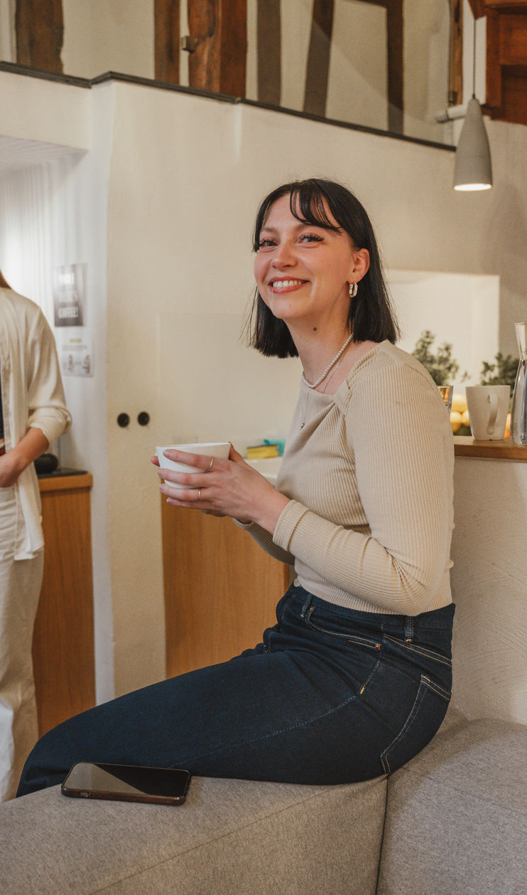

Kunden buchen kein Coaching-Angebot. Sie buchen DICH.
Ich arbeite mit Coaches, die neben ihrem Job ihr Business als Personal Brand aufbauen wollen. Mit ihrer Story, ihrer Haltung und ihrem Vibe. Damit sie gebucht statt verglichen werden und aus „irgendwann kündige ich“ ein Datum wird.
Du bist obsessed mit Coaching. Aber dein Business existiert nur in deinem Kopf?
Du hast deine Ausbildung gemacht, deine Tools sind da. Aber wer du in deinem Business sein willst, weißt du noch nicht.
Du postest über Persönlichkeitsentwicklung. Aber eher, was dich gerade beschäftigt, statt deiner eigenen Story.
Aktuell coachst du kostenlos oder für 'nen Apfel und ein Ei. Richtig Geld verdienen fühlt sich noch weit weg an.
Du bist finanziell auf deinen Job angewiesen. Und genau das zerreißt dich, weil du von deiner Passion leben willst.
Kapitel 2 · Die Zweifel
Und ja, die Zweifel sind da.Das gehört dazu.Die Frage ist nur, ob sie dich aufhalten.

Katharina Niesche Business Mentorin für Coaches
Kapitel 3 · Mein Wendepunkt
Mein Name ist Katharina & mein Weg sah ähnlich aus.
Ich saß jahrelang im klassischen Hamsterrad. Sicherer Job, gutes Image, aber innerlich komplett erschöpft.
Mai 2021 Ein schwerer Unfall hat alles verändert. Ich bin aufgewacht mit einer glasklaren Erkenntnis:
Ich habe nur dieses eine Leben.
Coaching wurde mein Weg in die Freiheit und meine Leidenschaft. Aber als ich mein eigenes Business aufbauen wollte, hatte ich keinen Plan. Ich stand vor genau demselben Berg wie du heute.
Heute helfe ich Frauen wie dir, diesen Berg strategisch zu erklimmen.
„Ich habe mich viel zu lange mit den falschen Themen beschäftigt und war frustriert. Mit Katharinas strukturiertem Vorgehen hatte ich schnell Klarheit über Zielgruppe, Positionierung und Angebot, passend zu meinem eigenen Weg. Jetzt fühlt sich alles rund an.“
Sophie M., Coach
Kapitel 5 · Dein nächster Schritt
So kannst du mit mir starten
Zwei Wege, dein Business aufzubauen
6 Monate · 1:1 Mentoring
1:1 Business is Calling
In 6 Monaten bauen wir deine Brand-Villa: Aus deiner Geschichte wird ein Coaching-Business, das zu dir passt und die richtigen Kundinnen anzieht.
Dein Instagram aus Sicht deiner Wunschkundin. Ich gehe dein Profil Schritt für Schritt durch und zeige dir, was sie sehen will, damit sie dir folgt und bucht. Mit Selbstcheck und Arbeitsfeldern.
Workshops, Events und Retreats, bei denen du nicht nur zuhörst, sondern an deinem Business arbeitest. Live, nah und mit Frauen, die genauso Bock haben wie du.